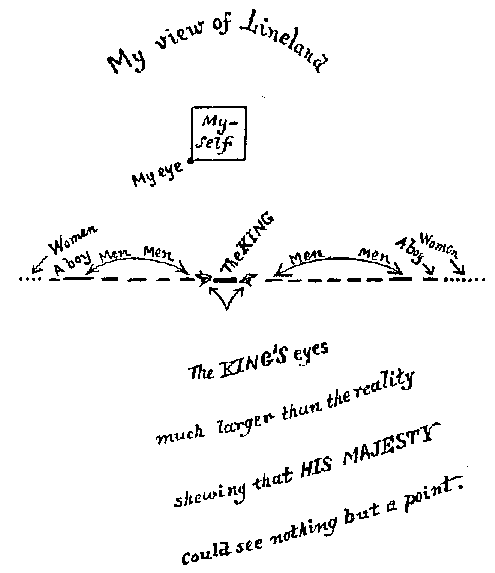

"O brave new worlds, that have such people in them!"
It was the last day but one of the 1999th year of our era, and the first day of the Long Vacation. Having amused myself till a late hour with my favourite recreation of Geometry, I had retired to rest with an unsolved problem in my mind. In the night I had a dream. I saw before me a vast multitude of small Straight Lines (which I naturally assumed to be Women) interspersed with other Beings still smaller and of the nature of lustrous points — all moving to and fro in one and the same Straight Line, and, as nearly as I could judge, with the same velocity.

A noise of confused, multitudinous chirping or twittering issued from them at intervals as long as they were moving; but sometimes they ceased from motion, and then all was silence.
Approaching one of the largest of what I thought to be Women, I accosted her, but received no answer. A second and a third appeal on my part were equally ineffectual. Losing patience at what appeared to me intolerable rudeness, I brought my mouth into a position full in front of her mouth so as to intercept her motion, and loudly repeated my question, "Woman, what signifies this concourse, and this strange and confused chirping, and this monotonous motion to and fro in one and the same Straight Line?"
"I am no Woman," replied the small Line: "I am the Monarch of the world. But thou, whence intrudest thou into my realm of Lineland?" Receiving this abrupt reply, I begged pardon if I had in any way startled or molested his Royal Highness; and describing myself as a stranger I besought the King to give me some account of his dominions. But I had the greatest possible difficulty in obtaining any information on points that really interested me; for the Monarch could not refrain from constantly assuming that whatever was familiar to him must also be known to me and that I was simulating ignorance in jest. However, by persevering questions I elicited the following facts:
It seemed that this poor ignorant Monarch — as he called himself — was persuaded that the Straight Line which he called his Kingdom, and in which he passed his existence, constituted the whole of the world, and indeed the whole of Space. Not being able either to move or to see, save in his Straight Line, he had no conception of anything out of it. Though he had heard my voice when I first addressed him, the sounds had come to him in a manner so contrary to his experience that he had made no answer, "seeing no man," as he expressed it, "and hearing a voice as it were from my own intestines." Until the moment when I placed my mouth in his World, he had neither seen me, nor heard anything except confused sounds beating against — what I called his side, but what he called his inside or stomach; nor had he even now the least conception of the region from which I had come. Outside his World, or Line, all was a blank to him; nay, not even a blank, for a blank implies Space; say, rather, all was non existent.
His subjects — of whom the small Lines were men and the Points Women — were all alike confined in motion and eye-sight to that single Straight Line, which was their World. It need scarcely be added that the whole of their horizon was limited to a Point; nor would any one ever see anything but a Point. Man, woman, child, thing — each was a Point to the eye of a Linelander. Only by the sound of the voice could sex or age be distinguished. Moreover, as each individual occupied the whole of the narrow path, so to speak, which constituted his Universe, and no one could move to the right or left to make way for passers by, it followed that no Linelander could ever pass another. Once neighbours, always neighbours. Neighbourhood with them was like marriage with us. Neighbours remained neighbours,till death did them part.
Such a life, with all vision limited to a Point, and all motion to a Straight Line, seemed to me inexpressibly dreary; and I was surprised to note the vivacity and cheerfulness of the King. Wondering whether it was possible, amid circumstances so unfavourable to domestic relations, to enjoy the pleasures of conjugal union, I hesitated for some time to question his Royal Highness on so delicate a subject; but at last I plunged into it by abruptly inquiring as to the health of his family. "My wives and children," he replied, "are well and happy."
Staggered at this answer — for in the immediate proximity of the Monarch (as I had noted in my dream before I entered Lineland) there were none but Men — I ventured to reply, "Pardon me, but I cannot imagine how your Royal Highness can at any time either see or approach their Majesties, when there are at least half a dozen intervening individuals, whom you can neither see through, nor pass by? Is it possible that in Lineland proximity is not necessary for marriage and for the generation of children?"
"How can you ask so absurd a question?" replied the Monarch. "If it were indeed as you suggest, the Universe would soon be depopulated. No, no; neigbourhood is needless for the union of hearts; and the birth of children is too important a matter to have been allowed to depend upon such an accident as proximity. You cannot be ignorant of this. Yet since you are pleased to affect ignorance, I will instruct you as if you were the veriest baby in Lineland. Know, then, that marriages are consummated by means of the faculty of sound and the sense of hearing.
"You are of course aware that every Man has two mouths or voices — as well as two eyes — a bass at one and a tenor at the other of his extremities. I should not mention this, but that I have been unable to distinguish your tenor in the course of our conversation." I replied that I had but one voice, and that I had not been aware that his Royal Highness had two. "That confirms my impression," said the King, "that you are not a Man, but a feminine Monstrosity with a bass voice, and an utterly uneducated ear. But to continue.
"Nature having herself ordained that every Man should wed two wives — " "Why two?" asked I. "You carry your affected simplicity too far," he cried. "How can there be a completely harmonious union without the combination of the Four in One, viz. the Bass and Tenor of the Man and the Soprano and Contralto of the two Women?" "But supposing," said I, "that a man should prefer one wife or three?" "It is impossible," he said; "it is as inconceivable as that two and one should make five, or that the human eye should see a Straight Line." I would have interrupted him; but he proceeded as follows:
"Once in the middle of each week a Law of Nature compels us to move to and fro with a rhythmic motion of more than usual violence, which continues for the time you would take to count a hundred and one. In the midst of this choral dance, at the fifty-first pulsation, the inhabitants of the Universe pause in full career, and each individual sends forth his richest, fullest, sweetest strain. It is in this decisive moment that all our marriages are made. So exquisite is the adaptation of Bass to Treble, of Tenor to Contralto, that oftentimes the Loved Ones, though twenty thousand leagues away, recognize at once the responsive note of their destined Lover; and, penetrating the paltry obstacles of distance, Love unites the three. The marriage in that instant consummated results in a threefold Male and Female offspring which takes its place in Lineland."
"What! Always threefold?" said I. "Must one wife then always have twins?"
"Bass-voiced Monstrosity! yes," replied the King. "How else could the balance of the Sexes be maintained, if two girls were not born for every boy? Would you ignore the very Alphabet of Nature?" He ceased, speechless for fury; and some time elasped before I could induce him to resume his narrative.
"You will not, of course, suppose that every bachelor among us finds his mates at the first wooing in this universal Marriage Chorus. On the contrary, the process is by most of us many times repeated. Few are the hearts whose happy lot it is at once to recognize in each other's voices the partner intended for them by Providence, and to fly into a reciprocal and perfectly harmonious embrace. With most of us the courtship is of long duration. The Wooer's voices may perhaps accord with one of the future wives, but not with both; or not, at first, with either; or the Soprano and Contralto may not quite harmonize. In such cases Nature has provided that every weekly Chorus shall bring the three Lovers into closer harmony. Each trial of voice, each fresh discovery of discord, almost imperceptibly induces the less perfect to modify his or her vocal utterance so as to approximate to the more perfect. And after many trials and many approximations, the result is at last achieved. There comes a day at last, when, while the wonted Marriage Chorus goes forth from universal Lineland, the three far-off Lovers suddenly find themselves in exact harmony, and, before they are awake, the wedded Triplet is rapt vocally into a duplicate embrace; and Nature rejoices over one more marriage and over three more births."
Next: Chapter 14